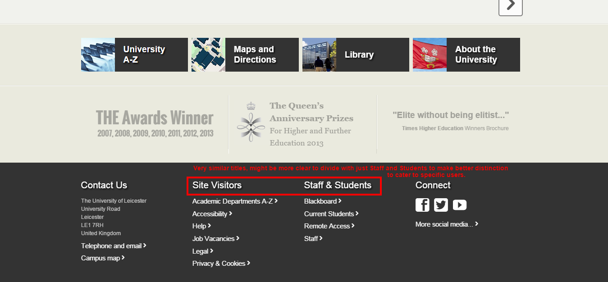
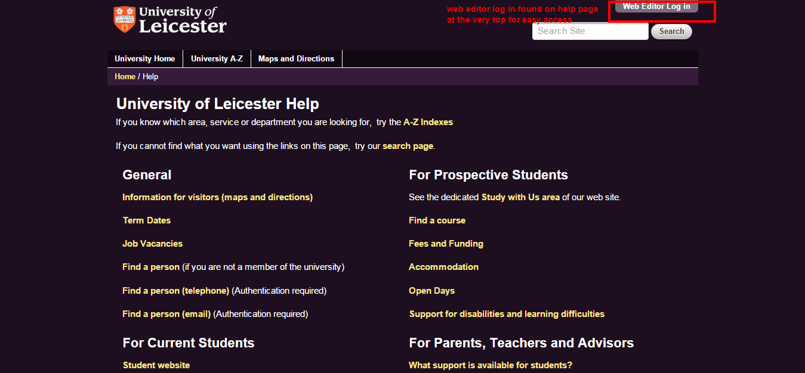

Flexibility and efficiency of use
Accelerators -- unseen by the novice user -- may often speed up the interaction for the expert user such that the system can cater to both inexperienced and experienced users. Allow users to tailor frequent actions.
For Novice Users{kind=link}
The university site caters to a wide range of users varying in different expertise and familiarity for the site. Users that are most familiar with the site would likely be current students and staff. However, since it is application season, the site caters first to potential international students which is indicated by "distance learning" and "international students" on the front page. It does a great job accelerating the path to applications for the novice users (potential students), although the difference between the two links are initially unclear, as explained in the Match page.
For Expert Users{kind=link}
The site does a good job for including unseen accelerators to novice users for expert users. At the footer, the site caters to common site visitors, staff, and students which is not clearly distinct from each other. While the footer is a great location for these accelerators, it would be may be more convenient for current students and staff to have obvious links to their logins. There are discrete sites with no clear way to navigate to from the front page, including student internal page and email page which has a long url.
{kind=link}